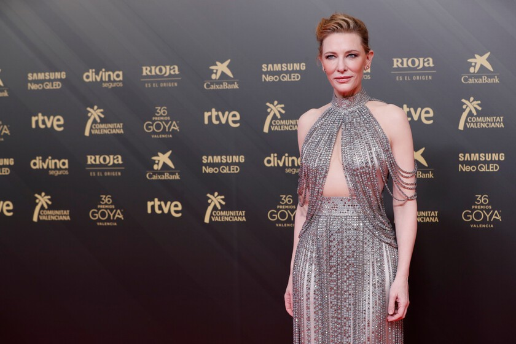

DESLUMBRANTE HOMENAJE EN EL CINE ESPAÑOL
Durante la ceremonia de los Premios Goya 2022, celebrada en el Palau de les Arts en Valencia, Cate Blanchett recibió el primer Goya Internacional, un galardón creado para honrar su contribución al cine mundial
Para la alfombra roja, seleccionó un vestido de Armani Privé color champán confeccionado en seda y completamente bordado con más de 300 flecos de cristales, inspirados en el glamour del Hollywood clásico.
El vestido presentaba un escote halter, una abertura en la zona del abdomen y mangas simuladas con tiras de strass, y una caída recta con movimiento sutil y sofisticado.
Cate completó el look con un recogido sencillo y maquillaje en tonos nude, cediendo todo el protagonismo al diseño.
